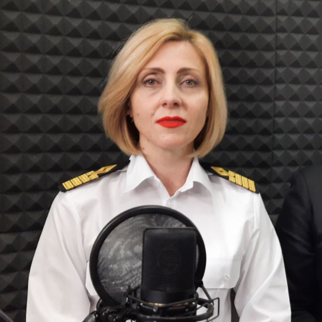
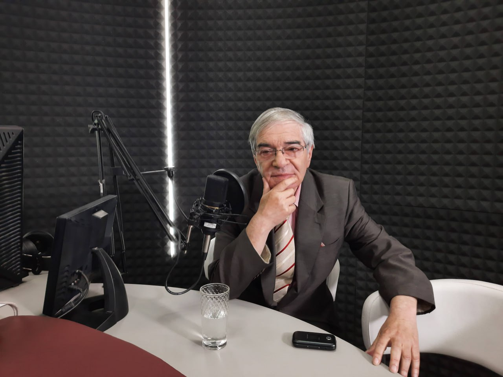
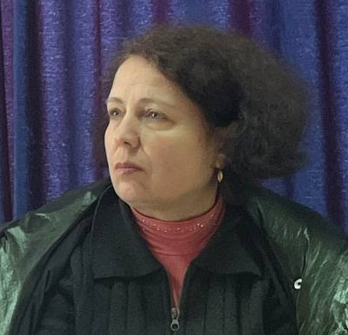
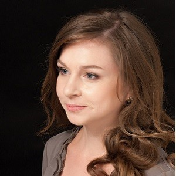
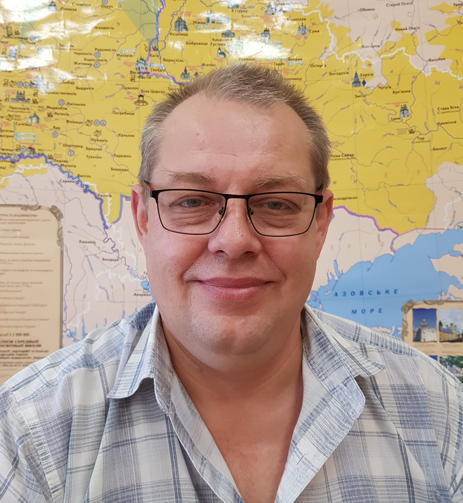
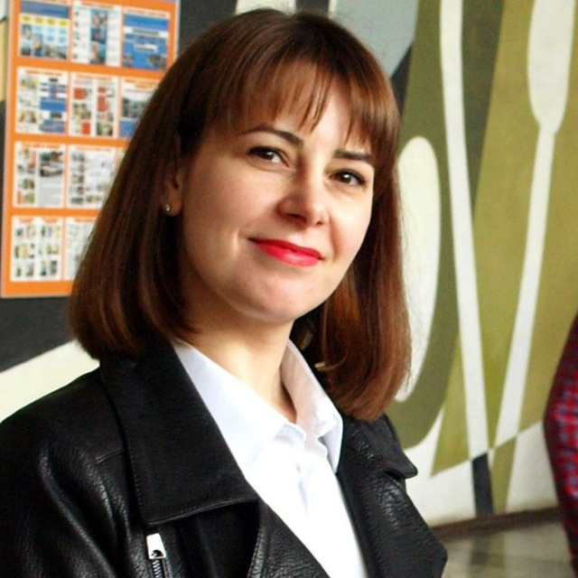
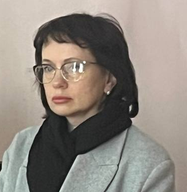
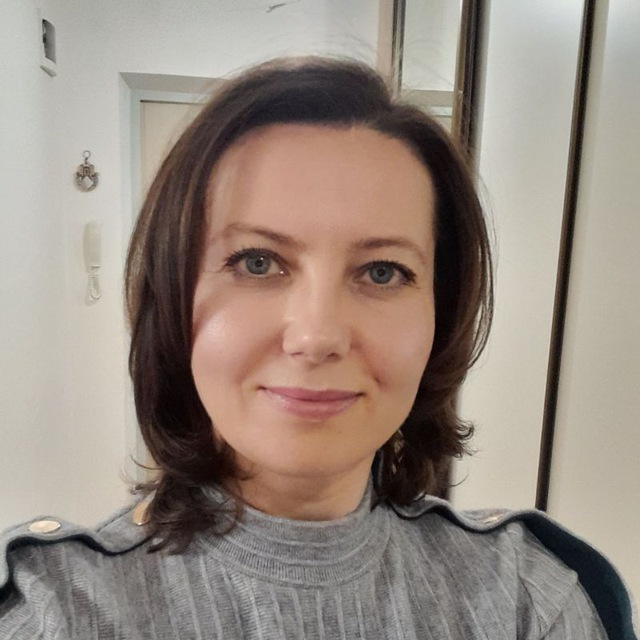
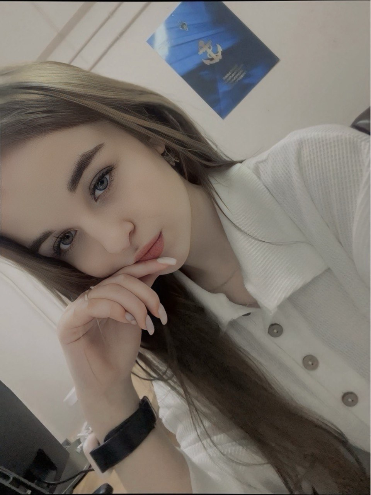

Вікторія Юріївна Сікорська
У 1998 році з відзнакою закінчила Одеський державний університет імені І.І. Мечникова за спеціальністю «Українська мова та література». Після університету здобула кваліфікацію філолога, викладача української та зарубіжної літератури. З 1998 року працювала вчителем, з 2002 — викладачем у Первомайському навчально-науковому центрі ОНУ. З 2010 року — доцент кафедри історії і загальних дисциплін, у 2007 році захистила кандидатську дисертацію на тему художнього часопростору в романах Павла Загребельного. У 2011 році отримала диплом PhD, у 2012 — звання доцента. У 2013–2019 роках працювала в Одеському національному політехнічному університеті. Від 2019 року — в Одеському національному морському університеті, з 2020 — завідувачка кафедри довузівської підготовки, з 2024 — кафедри журналістики та мовної комунікації. Член НСЖУ, НТШ, ГО «Український клуб Одеси». Головна редакторка наукового журналу «Причорноморські філологічні студії».

Іван Георгійович Нєнов
У 1973 році закінчив Тираспольський державний педагогічний інститут і розпочав кар’єру вчителем мови і літератури. З 1974 року працював в Одеській телерадіокомпанії — від телекоментатора до головного редактора та заступника гендиректора. Автор телепрограм «Телевізійна приймальня», «Сімейний альбом» і радіопередачі «В будинку на Троїцькій». Також був головним редактором газети «Одеські вісті». У 1997 році захистив кандидатську дисертацію з політичних наук, згодом отримав звання доцента. У 2003–2014 роках працював у Національній академії державного управління при Президентові України, з 2018 — в Одеському національному університеті. Член НСЖУ з 1976 року, член НСПУ з 2013 року. Заслужений журналіст України (1996), кавалер ордена Почесного хреста (2010) та почесної нагороди Святої Софії (2012).
Алла Федосіївна Коваленко

Алла Федосіївна — викладачка, фахівчиня в галузі філології та комунікації. Займається освітньою та науковою діяльністю, бере участь у розвитку фахової підготовки студентів, поєднуючи теоретичні знання з практичним досвідом.
Дарина Федорівна Стоянова

Кандидат філологічних наук, доцент кафедри лінгвістики та іноземних мов Одеського національного морського університету. Закінчила Одеський національний університет імені І. І. Мечникова, де здобула ступінь магістра за спеціальністю «Мова та література (болгарська)». У 2013 році захистила кандидатську дисертацію зі спеціальності 10.02.03 – слов’янські мови. У 2011–2019 роках працювала викладачем, старшим викладачем і доцентом кафедри болгарської філології ОНУ імені І. І. Мечникова, з 2019 по 2023 рік — доцентом кафедри загального та слов’янського мовознавства того ж університету. У викладацькій і науковій діяльності спеціалізується на методиці викладання української мови як іноземної, інших слов’янських мов, історії розвитку слов’янських мов, рукописній спадщині, славістиці та впровадженні сучасних освітніх технологій. Є членом Центру українського європейського наукового співробітництва, ГО «Прогресильні» та Одеського наукового товариства болгаристів.

Микола Миколайович
Кулачинський
Кандидат політичних наук, доцент кафедри суспільних наук. У 2012 році захистив кандидатську дисертацію на тему «Перспективи і фактори розвитку парламентаризму у Великобританії». Основні напрями наукової діяльності охоплюють політичні інститути та процеси у Великій Британії та Україні. Активно займається дослідженням проблем парламентаризму, порівняльної політології та функціонування демократичних систем.
Тетяна Олександрівна Коробко
Коробко Тетяна Олександрівна — доцент Одеського національного морського університету (ОНМУ), вчений секретар Вченої ради університету. Вона активно займається науково-методичною діяльністю, зокрема у сфері викладання української мови для іноземних студентів. Серед її праць — навчальні та методичні посібники, такі як «Практичний курс української мови», «Розвиток культури усного і писемного мовлення», «Українська мова за професійним спрямуванням у тестових завданнях» та «Країнознавство» . Як вчений секретар, вона координує діяльність Вченої ради ОНМУ, сприяючи розвитку наукової та освітньої роботи університету .

Людмила Сергіївна Дідур
Старший викладач кафедри журналістики та мовної комунікації ОНМУ. Магістр філології, спеціалістка в галузі української мови і літератури. Сфера наукових інтересів охоплює мовну ситуацію та мовну політику України, мовну ідентичність, міжкультурну ділову комунікацію та українську термінологію. З 2021 року викладає у вищій школі, з 2023 — на посаді старшого викладача. Учасниця наукових заходів і член ГО «Університет лідерства та інновацій».

Наталія Іванівна Курасова
Закінчила Донецький державний технічний університет (спеціальність «Міжнародна економіка») та Hogeschool van Utrecht (бакалавр зі спеціальності «Фінанси та кредит»). У 2016 році отримала кваліфікацію вчителя англійської мови та зарубіжної літератури в Горлівському інституті іноземних мов. Працювала вчителем англійської мови у загальноосвітній школі №31 (2016–2021). З вересня 2021 року — викладачка кафедри довузівської підготовки Одеського національного морського університету. Членка ГО «Центр українсько-європейського наукового співробітництва» та «Міжнародної фундації науковців та освітян» (IESF).

Вікторія Петрівна Ногай
Закінчила Одеський державний університет імені І. І. Мечникова (спеціальність «Українська мова та література»). Працювала вчителькою української мови та літератури у школах Одеси. З 2002 по 2005 рік працювала у Одеському регіональному інституті державного управління НАДУ при Президентові України на посадах провідного спеціаліста та методистки. З 2005 по 2021 рік — викладачка Одеського національного економічного університету. З 2021 року — старша викладачка кафедри журналістики та мовної комунікації Одеського національного морського університету. Наукові інтереси: мовознавство, мовна та соціальна комунікація. Активна учасниця наукових конференцій. Член Центру українсько-європейського наукового співробітництва та робочої групи з питань мовної стандартизації топонімів.

Анна Мільковська
Закінчила школу в Снігурівці у 2023 році. Незабаром після закінчення розпочала роботу лаборанткою в Одеському національному морському університеті. Активно набирається досвіду, демонструючи відповідальність і прагнення до професійного розвитку.
Кристина Бянова